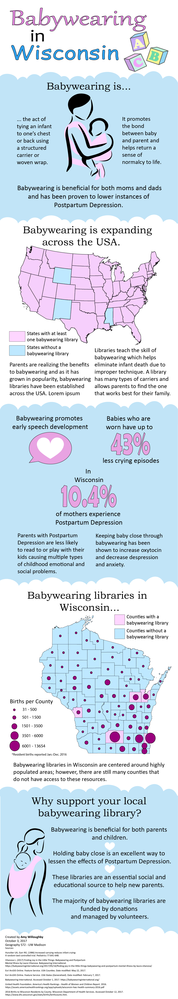

Title: Babywearing Infographic
Programs used: Adobe Illustrator, ArcMap, and Excel
Description: This project was created for Geography 572: Graphic Design in Cartography. The infographic displays the importance of babywearing and its benefits. There are many libraries that teach babywearing and lend out gear in Wisconsin, but they are spread too few to support the population.
